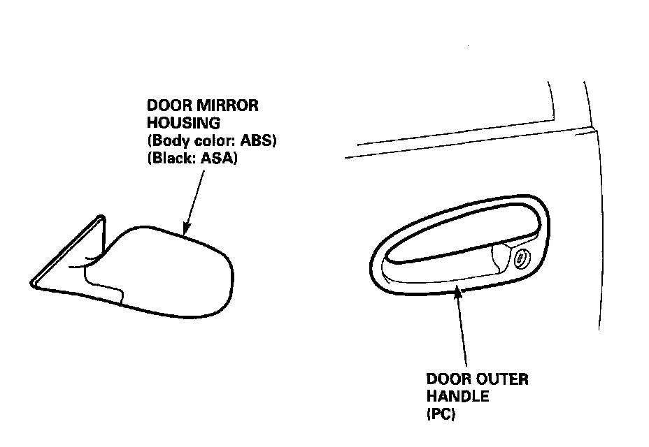

ABS Resin Parts (Door Mirror Housing and Door Outer Handle)
GeneralThe license plate trim, door mirror housing and hatch spoiler are made of ABS resin.
They can be repaired if the damage or deformation is minor in nature. This section covers ABS repair. Repairing ABS is different from other resins such as PP and urethane.

NOTE:
- The ABS resin is the copolymer resin consisting of the three monomers of acrylonitrile, butadiene, and styrene.
- Polycarbonate is a generic name for high polymers which have the carbonic ester structure in the structural unit. The most prominent feature of polycarbonate is its tensile strength which shows the same level of yielding point as metals in the normal temperature. It also has outstanding impact strength compared to other plastics.
NOTE: The following repair procedures also apply to the door outer handle (PC).